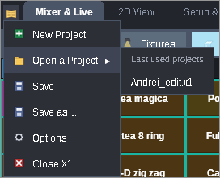

For: FullPlayer
A project is one file that holds everything of a show: the patch, the pages of the Live panel with their
buttons and sliders, the light sequences, the shows, the macros, the Sound2Light lists and the pictures of the
panel. Only the fixture profiles (.lfi2) are kept outside it (see
The program folder).

The project menu (the book at the left of the toolbar), with the last used projects.
| Command | What it does |
|---|---|
| New Project | Starts an empty project. It has no name and no folder yet: the first Save asks for them. |
| Open a Project | Opens a project file. Pointing at it shows the Last used projects: a click opens one of them. |
| Save | Saves the project in its file (see below for .x1 and
.xR). |
| Save as... | Saves the project in a new file, which is then the open project. |
| Options | The Option tab of Setup & Patch. |
| Close X1 | Closes the program. |
Save and Open are also the first two buttons of the quick bar.
Before another project is opened or the program is closed, the window Unsaved changes lists what was changed since the last save and asks whether to save it first: Yes asks where to save it (as Save as...), No goes on without saving, Cancel stays where you were.
| .x1 | .xR | |
|---|---|---|
| What it is | The project file of LumiDMX X1. | The project file of LumiDMX Remake Full. |
| Opened by | LumiDMX Remake Full, LumiDMX Remake Player, LumiDMX X1 | LumiDMX Remake Full only |
| Saved by | LumiDMX Remake Player | LumiDMX Remake Full |
Full When the Full saves a project that was opened as .x1, it writes
it as .xR next to it, with the same name: Club.x1 is saved as Club.xR, and
Club.x1 stays as it was. From then on the open project is the .xR. When such a file is
already there, the Full asks before it replaces it.
Player The Player opens and saves .x1 only. It has no tools that
change the patch or the Live panel, so what it saves are the settings it can change.
Tip: keep the .x1 you started from: it is the copy that LumiDMX X1 and the
Player can open.